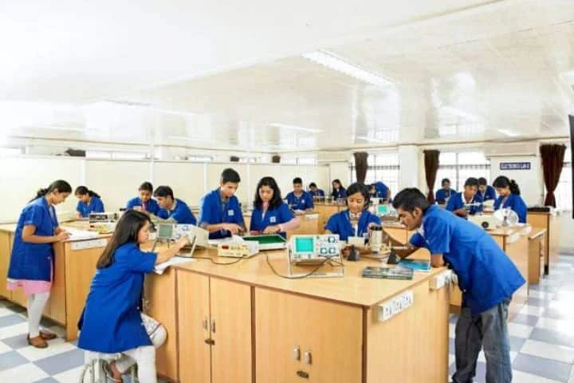
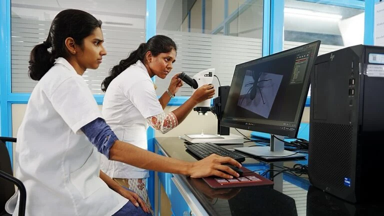
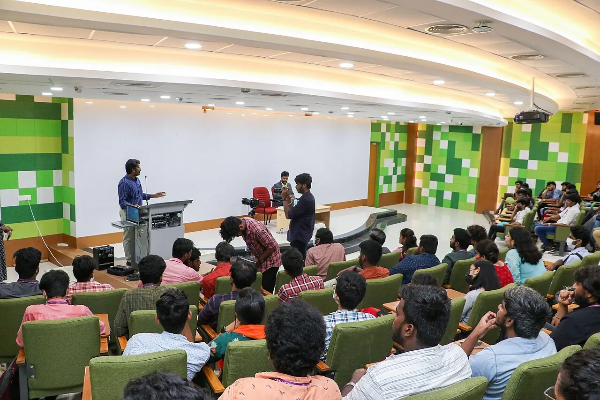

Undergraduate
Build a foundation in a subject and develop your interests through coursework and practical learning.
Undergraduate routes
Engineering and medicine. Law and the humanities. Find a subject to make your own.
Explore academic areasPhoto: Syed Tehzeeb Alam, CC BY-SA 4.0
Explore academic areas by subject or interest. Open an area to learn more about its study route.
Explore academic areas
Design, computing, machines and the systems that connect them.
Explore engineering study through lectures, practical laboratory work and projects.
Explore admission routeClinical learning, medical science and the study of human health.
Medicine and dentistry use NEET-based admission routes. Check the route for your intended level of study.
Explore admission routeOrganisations, enterprise and the decisions that shape business.
Explore business and management study, then discuss the relevant admission process with the admissions team.
Explore admission routeNatural sciences, languages and the study of people and ideas.
Explore your subject through scientific enquiry, analytical work and the humanities.
Explore admission routeLegal systems, justice and the practice of reasoned argument.
Explore legal study and speak to admissions about programme-specific requirements.
Explore admission routeFood, crops and the science of sustainable agricultural systems.
Agriculture admissions enquiries are handled by the engineering, agriculture and architecture admissions team.
Explore admission routeBuildings, places and the spaces people share.
Discuss your intended architecture programme and its admission requirements with the admissions team.
Explore admission routeMedicines, pharmaceutical science and their role in care.
Explore pharmacy study and the admission route for your chosen qualification.
Explore admission routePatient care, clinical practice and community health.
Explore nursing study and discuss programme-specific requirements with admissions.
Explore admission routeMovement, rehabilitation and physical wellbeing.
Explore physiotherapy and the study of rehabilitation and patient care.
Explore admission routeHelping people participate in everyday activities.
Explore occupational therapy study and the admission route for your chosen level.
Explore admission routeHospitality, service and the experience of welcoming people.
Explore hospitality and hotel management study at SRM.
Explore admission routePopulation health, prevention and healthcare systems.
Explore public health and discuss available study routes with the admissions team.
Explore admission routeTry a broader subject or clear the filters to explore all areas.


Your previous qualifications and your goals help determine where to begin.
Build a foundation in a subject and develop your interests through coursework and practical learning.
Undergraduate routesDeepen your knowledge, build specialist skills and take your study in a more focused direction.
Postgraduate routesDevelop a research question and explore the supervision, facilities and academic route it needs.
Explore research studyClassrooms are one part of learning. Laboratories, projects and the wider campus give ideas room to develop.

SRM brings engineering, health, science, management, law and other academic communities together. Explore the people and activities beyond your own subject.
Life beyond the classroomResearch at SRM
Looking for a different way to study? Ask admissions about current online and distance offerings, the qualification awarded, learning arrangements and programme-specific requirements.
Discuss your study options